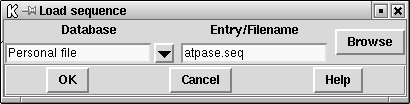
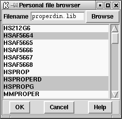
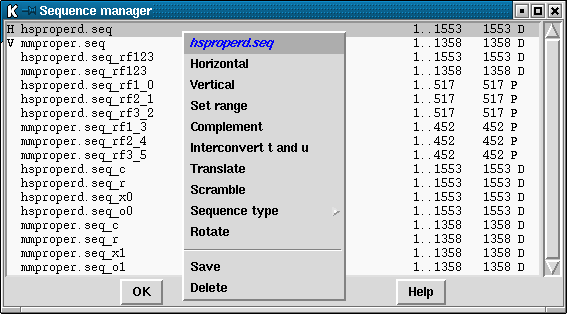
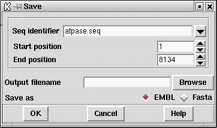

Spin manages sequences at two levels. First it provides for reading sequences into the program from disk files, and secondly it contains a range of facilities for deriving new sequences from them. For example it can internally produce protein sequences from DNA sequences, or produce the complement of a DNA sequence, rotate it about any position, or scramble it. Each of these types of internal operation produces a new sequence which can be analysed using the comparison functions, or which can be saved to disk. In the same way, performing a sequence alignment produces two new sequences which can be analysed or saved to disk.
The sections below deals first with reading sequences from disk, and then with what can be done to produce new sequences in memory. New sequences are obtained from disk using the Load sequences option in the File menu, and sequences are managed internally using the Sequences menu.
At present spin can only read feature tables from EMBL style files and use them to perform translations to protein. Like many components of spin, for us this was an exercise in doing the hard part (ie parsing and using the table), but we still need to apply it to many other tasks. We also need to generalise it to read genbank files.
We also limited the types of record we accepted: only those with precisely defined endpoints. This means we do not store records which for example include <1..2000 or 1001.1005 but would store and use those with (1001..2000) or complement(join(2691..4571,4918..5163)).
This section describes how sequences are obtained from disk files.
Personal sequence files can be in plain text, "Staden", EMBL, Genbank, PIR, FASTA and GCG formats. If supported by the format, personal files can contain multiple entries preceded by entry names. As is explained below a browser is available for selecting entries from such files. The file format is worked out automatically.
New sequences are entered into spin using the "Load sequence" option in the File menu.
If a sequence is entered which has the same name as one already loaded, its name within the program is changed by the addition of '#number' where 'number' is a unique identifer. For example, if the sequence "hsproperd" has already been loaded and this sequence is loaded again, the name of this second sequence is changed to "hsproperd#0".
If only one sequence has been loaded, the comparison functions will compare this sequence against itself.

This allows the selection of personal files. The second option button is an "Entry" / "Filename" selection menu and the entry box next to this should be completed with either an entryname or file_name accordingly. If a personal file is selected, the filename should be entered in the entrybox. The Browse buttons at the far right of the dialogue box either invoke a library browser or a file browser,
see section File Browser depending on whether a sequence library or personal file has been selected. From the file browser multiple files can be entered by use of the Ctrl key and mouse. Library access is only available via EMBOSS.

This method invokes an archive browser. Enter the filename of the personal file in the entrybox. The Browse button to the right will invoke a file browser,
see section File Browser. If the file contains multiple entries, these will be displayed in the list box. It is necessary to press "Enter" after entering the filename in order for the entries to be displayed. Select the required entryname(s) and press OK. The selected entries should now have been loaded into spin.
Spin allows more than two sequences to be available to the user. The sequence manager allows the user to perform operations on the sequences which have been loaded into spin. The same operations can also be invoked from the "Sequences" menu. The sequence manager is invoked from the "File" menu. This command invokes a list box showing all the sequences which have been read into spin together with their ranges, lengths and whether they are DNA (D) or Protein (P). The currently active horizontal and vertical sequences are marked with "H" and "V" respectively. In the picture below, these are "hsproperd" and "mmproper".

Clicking on the sequence name in the sequence manager with the right mouse button invokes a pop-up menu containing operations which may be performed on that sequence. The operations available depends on whether the sequence is DNA or protein.
These options are described in greater detail below.
To change the currently active horizontal or vertical sequence, use either the "Sequences" menu or select the sequence from the Sequence manager. Select "Horizontal" or "Vertical" from the menu. This sequence will now be the active "Horizontal" or "Vertical" sequence.
If you are only interested in a particular region of a sequence, it is possible to specify the start and end positions of this region to create a new entry in the Sequence manager. The new sequence will have the same name as the parent, with the addition of a "_s" plus a unique number. The third entry in the picture above shows the range has been set from 100 to 1000, giving a total length of 901 bases for the sequence "hsproperd".
This option in the Sequences menu allows a sequence to be duplicated or copied. This simply creates a new entry in the Sequence Manager. The user can select which sequence and the segment start and end points to be copied.
This option allows the user to change the status of a sequence to become either circular or linear.
This function will reverse and complement nucleic acid sequences. Select the "Complement" command from either the "Sequences" menu or the sequence manager pop-up menu. A new sequence will be added to the sequence manager list box with the same name as the parent but with "_c" appended to the end. The forth entry in the picture above is the complemented sequence of "hsproperd".
This function interconverts T and U characters i.e. between DNA and RNA. A new sequence is added to the sequence manager list box with the same name as the parent but the addition to the end of "_r". The fifth entry is the picture above is the transcribed sequence of "hsproperd".
This operation is only available for DNA sequences. Select the "Translate" command from either the "Sequences" menu or the sequence manager pop-up menu. It is possible to translate in any particular frame by selecting the appropriate check box. For each translation, a new sequence will be added to the sequence manager list box with the same name as the parent but with the addition to the end of either "_rf1", "_rf2" or "_rf3" to signify reading frames 1, 2 or 3 respectively.
The "all together" option will produce a single new sequence in the sequence manager, with the extension "_rf123", exemplified by the ninth entry in the picture above. Although at this point the sequence is still DNA, when it is used in a comparison function the program will translate it automatically into the three reading frames. The important point is that the results from the three reading frames will be superimposed in the plot, hence enabling frameshift errors to be spotted.
For example to compare a DNA sequence in all it's reading frames with a protein:
This function produces a version of a given DNA or protein sequence in which the characters are randomly reordered. i.e. the new sequence has the same length and composition as the original but with the characters in a random order. The new sequence will be added to the sequence manager list box with the same name as the parent except with "_x" plus a unique number appended to the end. The tenth entry in the picture above is the scrambled version of "hsproperd". For long sequences, scrambling and then comparing should produce similar numbers of matches as are predicted by the probability calculations ( see section Probabilities and expected numbers of matches).
This function allows the user to specify a new origin for a sequence. A new sequence is added to the sequence manager list box with the same name as the parent except with "_o" plus a unique number appended to the end. The eleventh entry in the picture above is of a rotated version of "mmproper". This operation is not allowed for sub-sequences ie those created using "Set range".
To save a sequence to a file, select the "Save" option from either the "File" menu, the "Sequences" menu or the sequence manager pop-up menu. This command invokes a file name entry box. The browse button to the right of the dialogue box invokes a filebrowser.
See section File Browser. The sequence is written as either EMBL or FASTA format. If EMBL is selected and the sequence has an associated feature table, the feature table will also be written out (see section Use of feature tables in spin).

To delete a sequence, select the "Delete" option from either the "Sequences" menu or the sequence manager pop-up menu. This command will remove the sequence from the sequence manager and all plots and results that were produced from it.
All the comparison functions request a horizontal and a vertical sequence and the ranges over which the function will operate. It is therefore possible to compare the same sequence over different ranges. The default sequences which appear when the dialogue box for the comparison function is brought up, are the current "active" sequences ( see section Sequence manager). To select a different sequence for this invocation of the function, press the Browse button to the right of the "Seq identifier" box. This will invoke a Sequence manager if one is not already displayed. Clicking with the left mouse button on the name of the required sequence in the sequence manager will update the function dialogue box with the sequence name and it's currently defined range. To change the range, enter the new start and end positions. These positions will be remembered for future invocations of any of the comparison functions for this sequence.